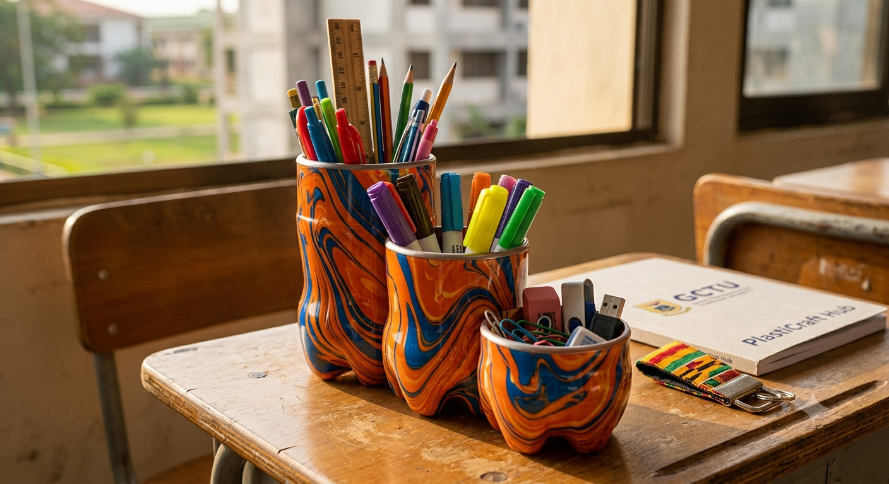
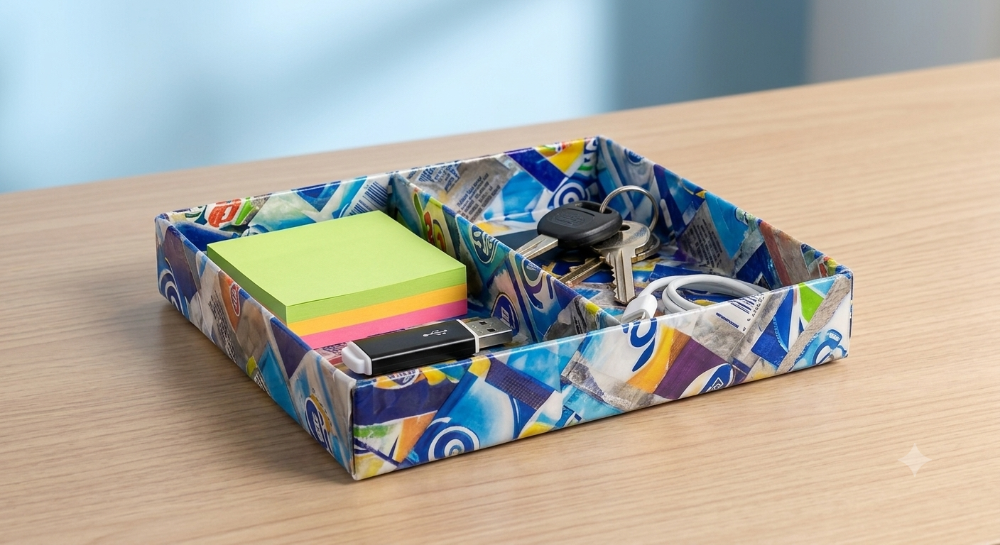
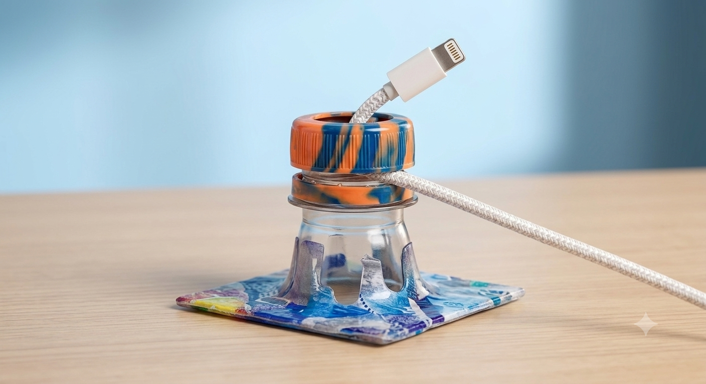
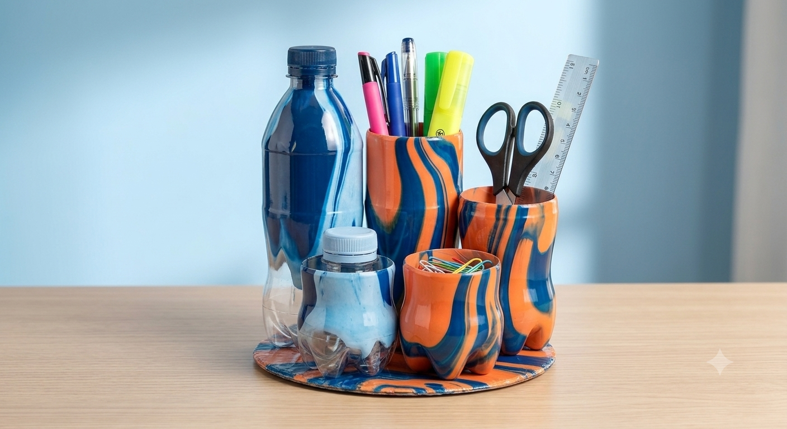

The PlastiCraft Eco-Kit ⚡
Upcycled Student Essentials Designed for Modern Campus Life
Transforming Local Waste into Value ♻️
PlastiCraft Hub empowers students to turn everyday plastic waste—like water sachets, bottle caps, and soda bottles—into sleek, high-utility study gear.
Plastic Impact Calculator
Type in how many plastic items you've recycled today to see your positive environmental footprint:
Interactive Step-by-Step Manuals
Scan the QR code on your product or select a project below to learn how to craft your own!
Tools & Materials Needed:
12–16 clean water sachets, 2 sheets parchment paper, household iron, scissors/utility knife, ruler & marker, contact adhesive or needle/thread.
Step-by-Step Construction Process:
- Prep & Sanitize: Cut open seals of sachets, slice down one side to lay flat, wash thoroughly with soap/water, and dry completely.
- Layer the Stack: Place 1 sheet of parchment paper down, stack 6–8 sachet layers (alternating print directions for abstract patterns), and cover with 2nd parchment sheet.
- Thermal Fusion: Iron on medium/wool heat in slow circular motions for 10–15 seconds per side. Let cool 30 seconds and peel paper away to reveal waterproof plastic leather.
- Measure & Cut: Trim sheet to a 20cm x 15cm rectangle. Measure 3cm inward on all sides for wall fold lines, and cut 3cm slits at each corner.
- Fold, Bond & Compartments: Fold walls upward and glue or stitch overlapping corner tabs. Optional: Glue a 15cm x 3cm fused plastic strip across center as a divider wall.

Tools & Materials Needed:
1 plastic bottle neck + matching cap, utility knife/blade, sandpaper/file, mounting baseboard (wood/fused sachet board), contact adhesive.
Step-by-Step Construction Process:
- Carve the Saddle Base: Cut bottle neck off. Carve two opposing downward U-shaped notches across the top rim where charging cord rests.
- Modify the Cam Collar: Cut top face out of cap to form a ring, remove a small section for an open arc, and keep an inward U-shaped pocket on inner rim.
- Mount Assembly: Glue bottom flange of bottle neck flat onto baseboard.
- Locking Mechanism: Lay cord horizontally across neck saddle notches, thread modified cap ring on, and screw down—the inward U-pocket rotates and clamps cord perpendicularly against neck!
- Pro Upgrades: Mount 3 bottle necks side-by-side for a Multi-Cord Rail or glue a recycled magnet to base bottom for metal desk-leg snapping!

Tools & Materials Needed:
3 plastic Coke bottles, utility knife/scissors, spray paint & bowl of water (for dipping), iron/sandpaper, contact adhesive, ruler/marker, baseboard.
Step-by-Step Construction Process:
- Measure & Cut Tiers: Wash and dry 3 bottles. Mark circumference lines at staggered heights: 12cm (rulers/scissors), 8cm (pens), and 5cm (erasers). Cut bottom halves.
- Hydro Dip Custom Finish: Spray two colors into a bowl of water, swirl the pattern, gently dip each cut bottle half into the swirl, and let dry completely.
- Smooth Cut Rims: Press cut edges against a warm iron for 1–2 seconds to curl edges into a smooth rounded lip (or sand smooth).
- Bond Cascading Structure: Glue bottle sides together in a descending line or triangle. Glue cluster base onto baseboard and trim excess.
- Finish Touch: Wrap exterior with a fused sachet sleeve or pour 1cm of sand/caps into bottom cups for weighted stability.

Order Ready-Made Student Eco-Set
🛒 Complete Your Order
Step 1: Send GHS 45.00 via Mobile Money to020-895-2307 (Account Name: PlastiCraft Hub).
Step 2: Fill out your details below and paste your10-Digit MoMo Transaction Reference ID to confirm!